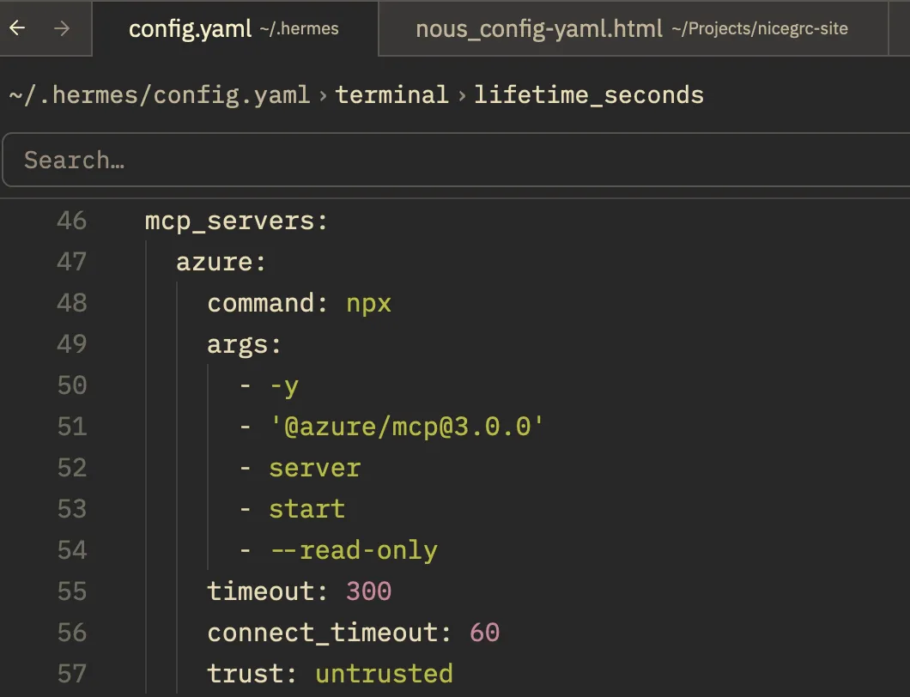

Nous Hermes Architecture > soul.md > config.yaml

The config.yaml file is the "system settings” for the ai-agent. On any given laptop you’ll have a variety of settings configured. What is my wifi network? Is my default browser Google Chrome, or Safari? If I open a .pdf, does Adobe Acrobat open the file or another program?
Your agent reads the config.yaml each time you start it up. It answers things like “What tools do I have?” Am I processing prompts with Gemini, Deepseek, Opus, or Qwen? How many times should a tool loop before it fails? What MCP servers am I configured to interact with? (This is a key configuration for working with external data.)


Hermes ships with its default: tools, skills, configs, and LLM router so you can select your desired model to run prompts through. A tool called "firecrawl" also comes standard. This allows the agent to browse websites, read the data, and click through links. In the previous reddit complaint screenshot, the user stated:
That would have required the agent to authenticate with a username and password, which would have needed to be configured in advance. If the agent has never done this sequence of events before it will simply:
attempt > fail > attempt and repeat based on the failure guardrails set in your config.yaml file.
New task loops that work through attempts/failures get written as a new skill when successful.
The reason why Anthropic or OpenAi agents seem like "magic" is because the integrations and contextual data are already built in. For an open source agent like hermes, it has to learn all of this through memory, mcp integrations, pre-built tools, and learned skills.